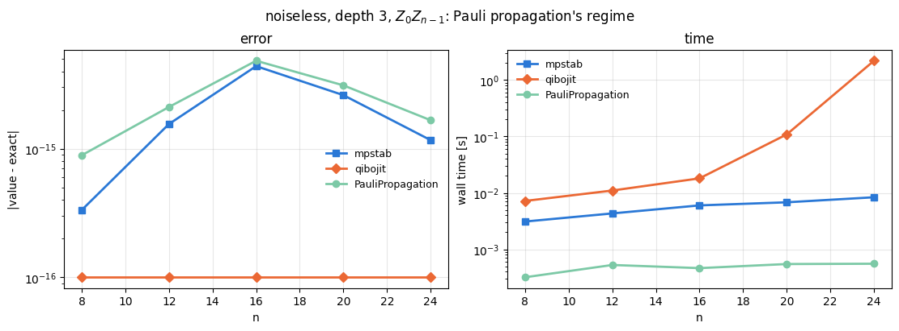
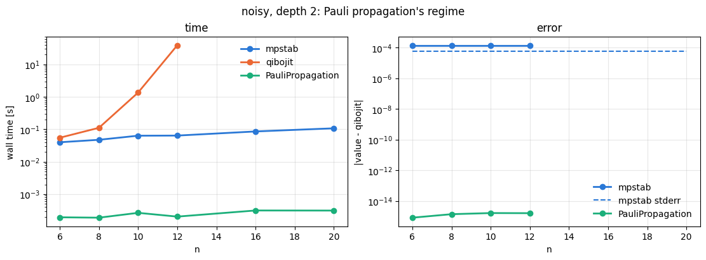
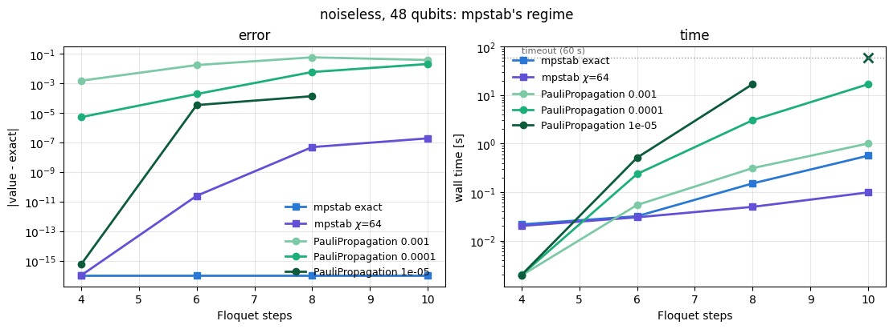
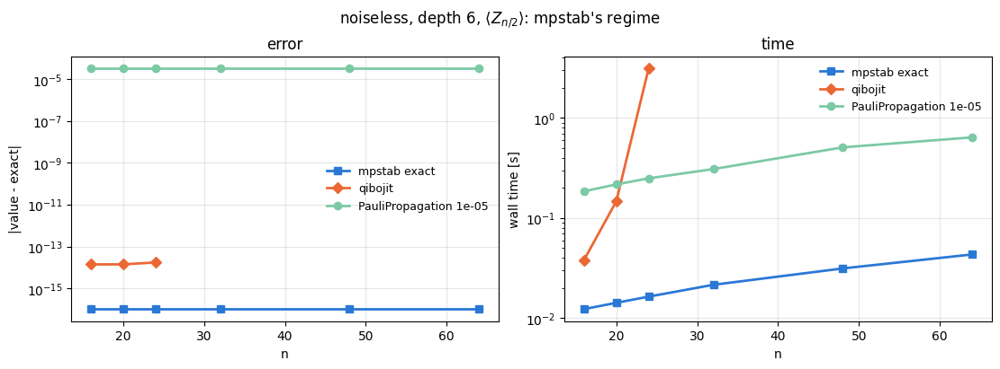
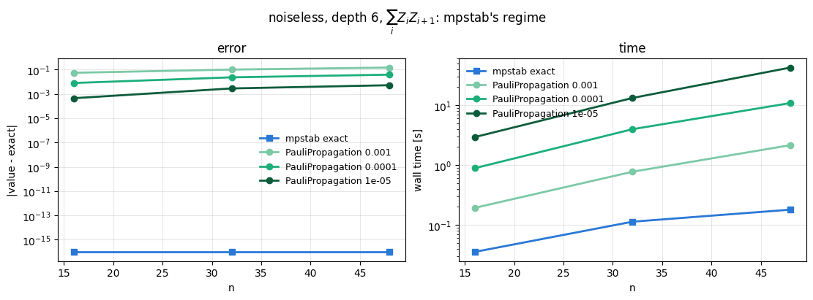
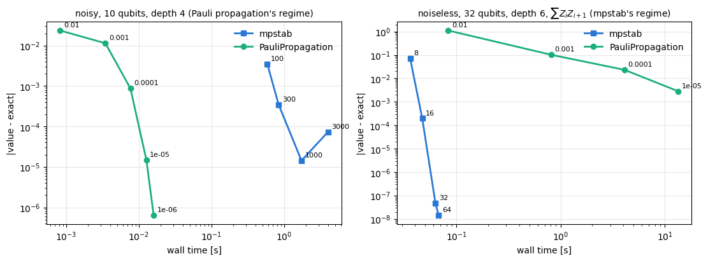
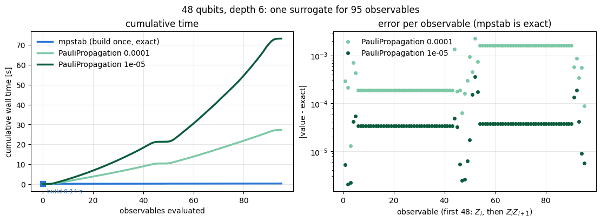

mpstab vs qibojit vs PauliPropagation.jl: who wins where¶
Three simulators of the same circuits:
mpstab: the HSMPO surrogate, a stabilizer tableau for the Clifford gates and an MPS for the magic ones, applied as dressed Pauli rotations;
qibojit (qibo’s numba backend): exact statevector, or exact density matrix with noise;
PauliPropagation.jl: the observable propagated backwards as a sum of Pauli strings, truncated at
min_abs_coeff.
None of them wins everywhere, and this notebook shows both sides.
regime |
best choice |
why |
|---|---|---|
few qubits (≲ 20) |
qibojit |
exact and simple; its cost doubles with every qubit |
shallow circuits, local observable |
Pauli propagation |
the observable’s light cone holds a handful of Pauli strings |
noisy circuits, local observable |
Pauli propagation |
noise damps Pauli strings, so truncation gets easier; mpstab samples faults and pays variance |
deep circuits, many qubits |
mpstab |
Pauli propagation’s term count explodes with depth; the MPS bond dimension grows far more slowly |
observables with many terms |
mpstab |
one MPS serves every term; Pauli propagation pays per term |
many observables, same circuit |
mpstab |
the surrogate is built once; Pauli propagation re-propagates for each |
Every error is measured against an exact value: qibojit where it fits, and otherwise mpstab with no bond-dimension cap and no SVD cutoff, which involves no approximation at all and is checked against qibojit below.
Launch from the repository root:
uv run --with juliacall --with qibojit --with pandas --with jupyterlab \
jupyter lab examples/notebooks/benchmarks/frameworks.ipynb
The first run downloads Julia and PauliPropagation.jl (a few minutes).
Timings are wall clock for one evaluation. mpstab: everything (Clifford split, dressing, MPS evolution). qibojit: circuit execution and contraction, after a numba warm-up, running multithreaded. PauliPropagation: the propagation alone, compiled first; runs that could blow up go to a separate process that is abandoned after TIMEOUT seconds.
[1]:
import numpy as np
import pandas as pd
import matplotlib.pyplot as plt
import frameworks as fw
set_backend("numpy") # mpstab's own qibo calls; qibojit is used as an object
pd.set_option("display.precision", 4)
TIMEOUT = 60 # seconds per PauliPropagation run in the mpstab regime
MARKERS = {"mpstab": "s", "qibojit": "D", "PauliPropagation": "o"}
def exact_mpstab(circuit, observable):
"""mpstab with no bond cap and no SVD cutoff: no approximation at all."""
return fw.run_mpstab(circuit, observable, max_bond=None, svd_cutoff=0.0)
def pp_isolated(circuit, observable, threshold, steps):
"""PauliPropagation in a child process, compiled on one Floquet step first."""
return fw.run_pp_isolated(circuit, [], observable, timeout=TIMEOUT,
warmup_gates=len(circuit.queue) // steps,
min_abs_coeff=threshold)
def plot_methods(df, x, title, xlabel=None):
"""Error and time against `x`, one line per method; timeouts as x marks."""
greens = iter(["#7cc9a6", "#1baf7a", "#0c5c3c", "#008300"])
blues = iter(["#2a78d6", "#6250d6", "#1f4f8f"])
fig, (ax_error, ax_time) = plt.subplots(1, 2, figsize=(11, 4), constrained_layout=True)
for method, d in df.groupby("method", sort=False):
family = method.split()[0]
color = fw.COLORS["qibojit"] if family == "qibojit" else next(
blues if family == "mpstab" else greens)
style = dict(color=color, marker=MARKERS[family], markersize=6, linewidth=2, label=method)
done = d.dropna(subset=["time"])
ax_time.plot(done[x], done["time"], **style)
errors = done.dropna(subset=["error"])
if len(errors):
ax_error.plot(errors[x], errors["error"].clip(lower=1e-16), **style)
timed_out = d[d["time"].isna()]
if len(timed_out):
ax_time.plot(timed_out[x], [TIMEOUT] * len(timed_out), "x", color=color,
markersize=9, mew=2)
if df["time"].isna().any():
ax_time.axhline(TIMEOUT, color="0.6", linestyle=":", linewidth=1)
ax_time.annotate(f"timeout ({TIMEOUT} s)", (df[x].min(), TIMEOUT), xytext=(0, 4),
textcoords="offset points", fontsize=8, color="0.4")
ax_error.set(yscale="log", xlabel=xlabel or x, ylabel="|value - exact|", title="error")
ax_time.set(yscale="log", xlabel=xlabel or x, ylabel="wall time [s]", title="time")
for ax in (ax_error, ax_time):
ax.grid(alpha=0.3)
ax.legend(frameon=False, fontsize=9)
fig.suptitle(title)
return fig
[Qibo 0.3.6|INFO|2026-11-17 10:41:33]: Using numpy backend on /CPU:0
[2]:
jit = fw.qibojit_backend()
pp = fw.PauliPropagation() # installs + warms up Julia on first use
Detected IPython. Loading juliacall extension. See https://juliapy.github.io/PythonCall.jl/stable/compat/#IPython
1. Sanity check: all three agree¶
A small kicked Ising circuit, with and without noise. Noiseless, the three agree to machine precision; with noise, PauliPropagation still matches qibojit and mpstab lands within a few stderr (its multi-fault part is sampled).
[3]:
n, depth = 8, 3
circuit = fw.kicked_ising(n, depth)
for events in ([], fw.noise_events(circuit, p=0.005, crosstalk=0.02)):
rows = fw.compare(circuit, events, fw.local_z(n), qibojit=jit, pauli_propagation=pp,
pp_options=dict(min_abs_coeff=1e-10),
mpstab_options=dict(n_samples=1000, seed=0))
print("noisy" if events else "noiseless")
display(pd.DataFrame(rows).set_index("framework")[["value", "error", "time"]])
noiseless
| value | error | time | |
|---|---|---|---|
| framework | |||
| mpstab | 0.3266 | 3.3307e-16 | 0.0039 |
| qibojit | 0.3266 | 0.0000e+00 | 0.0076 |
| PauliPropagation | 0.3266 | 8.8818e-16 | 0.0004 |
noisy
| value | error | time | |
|---|---|---|---|
| framework | |||
| mpstab | 0.2404 | 2.6561e-04 | 0.4459 |
| qibojit | 0.2401 | 0.0000e+00 | 0.1779 |
| PauliPropagation | 0.2401 | 4.9314e-12 | 0.0010 |
The exact reference beyond qibojit¶
mpstab with no bond cap and no SVD cutoff makes no approximation. Against qibojit it agrees to \(10^{-14}\); beyond qibojit’s reach it is the reference for the rest of the notebook.
[4]:
for n in (12, 16, 20, 24):
circuit, observable = fw.kicked_ising(n, 6), fw.local_z(n, (n // 2,))
reference = fw.run_qibojit(jit, circuit, [], observable)
ours = exact_mpstab(circuit, observable)
print(f"n={n}: |mpstab - qibojit| = {abs(ours['value'] - reference['value']):.1e} "
f"mpstab {ours['time']:.3f} s, qibojit {reference['time']:.3f} s")
n=12: |mpstab - qibojit| = 9.1e-15 mpstab 0.009 s, qibojit 0.023 s
n=16: |mpstab - qibojit| = 1.4e-14 mpstab 0.011 s, qibojit 0.036 s
/Users/robbiati/Documents/PostDoc/mpstab-related/mpstab/.venv/lib/python3.11/site-packages/autoray/autoray.py:104: RuntimeWarning: divide by zero encountered in matmul
return func(*args, **kwargs)
/Users/robbiati/Documents/PostDoc/mpstab-related/mpstab/.venv/lib/python3.11/site-packages/autoray/autoray.py:104: RuntimeWarning: overflow encountered in matmul
return func(*args, **kwargs)
/Users/robbiati/Documents/PostDoc/mpstab-related/mpstab/.venv/lib/python3.11/site-packages/autoray/autoray.py:104: RuntimeWarning: invalid value encountered in matmul
return func(*args, **kwargs)
n=20: |mpstab - qibojit| = 1.4e-14 mpstab 0.014 s, qibojit 0.149 s
n=24: |mpstab - qibojit| = 1.7e-14 mpstab 0.016 s, qibojit 3.231 s
2. Where Pauli propagation wins: shallow circuits, local observables¶
A kicked Ising circuit of depth 2–3 and the two-site observable \(Z_0 Z_{n-1}\): its light cone holds a few dozen Pauli strings at any width, so Pauli propagation does almost no work.
[5]:
SIZES = [8, 12, 16, 20, 24]
shallow = fw.sweep(((n, fw.kicked_ising(n, 3), [], fw.local_z(n)) for n in SIZES),
label="n", qibojit=jit, pauli_propagation=pp,
pp_options=dict(min_abs_coeff=1e-6))
shallow["method"] = shallow["framework"]
plot_methods(shallow, "n", "noiseless, depth 3, $Z_0 Z_{n-1}$: Pauli propagation's regime");
n=8: mpstab 0.00311s qibojit 0.0072s PauliPropagation 0.000319s
n=12: mpstab 0.00433s qibojit 0.011s PauliPropagation 0.000527s
n=16: mpstab 0.006s qibojit 0.0181s PauliPropagation 0.000464s
n=20: mpstab 0.00681s qibojit 0.109s PauliPropagation 0.000548s
n=24: mpstab 0.00836s qibojit 2.2s PauliPropagation 0.000555s

With noise¶
Depolarizing noise after every gate (\(p = 0.005\)) plus \(ZZ\) crosstalk. Noise is Pauli propagation’s best friend: it multiplies every Pauli string by a damping factor, at no cost and with no variance. mpstab turns faults into sign patterns of the noiseless circuit: zero and one fault exactly, more faults sampled, which costs time and leaves a statistical error (dashed). qibojit’s density matrix stops at 13 qubits.
[6]:
SIZES = [6, 8, 10, 12, 16, 20]
def noisy_case(n, depth):
circuit = fw.kicked_ising(n, depth)
return circuit, fw.noise_events(circuit, p=0.005, crosstalk=0.02), fw.local_z(n)
noisy = fw.sweep(((n, *noisy_case(n, 2)) for n in SIZES), label="n", qibojit=jit,
pauli_propagation=pp, pp_options=dict(min_abs_coeff=1e-6),
mpstab_options=dict(n_samples=1000, seed=0))
fw.plot(noisy, "n", "noisy, depth 2: Pauli propagation's regime");
n=6: mpstab 0.0398s qibojit 0.0549s PauliPropagation 0.000194s
n=8: mpstab 0.0474s qibojit 0.111s PauliPropagation 0.000189s
n=10: mpstab 0.0634s qibojit 1.35s PauliPropagation 0.000266s
n=12: mpstab 0.064s qibojit 38.7s PauliPropagation 0.000204s
n=16: mpstab 0.0857s PauliPropagation 0.000315s
n=20: mpstab 0.107s PauliPropagation 0.000313s

3. Where mpstab wins: depth, width and many-term observables¶
Depth¶
48 qubits, \(\langle Z_{24}\rangle\), increasing depth. Pauli propagation’s term count grows exponentially with the number of magic gates in the light cone, so to stay accurate it needs a small min_abs_coeff, and then its runtime explodes. mpstab’s cost follows the MPS bond dimension, which grows far more slowly; with no cap it is exact.
[7]:
N, DEPTHS = 48, [4, 6, 8, 10]
observable = fw.local_z(N, (N // 2,))
rows = []
for depth in DEPTHS:
circuit = fw.kicked_ising(N, depth)
reference = exact_mpstab(circuit, observable)
rows.append(dict(method="mpstab exact", depth=depth, error=0.0, time=reference["time"]))
capped = fw.run_mpstab(circuit, observable, max_bond=64)
rows.append(dict(method="mpstab $\\chi$=64", depth=depth,
error=abs(capped["value"] - reference["value"]), time=capped["time"]))
for threshold in (1e-3, 1e-4, 1e-5):
r = pp_isolated(circuit, observable, threshold, depth)
rows.append(dict(method=f"PauliPropagation {threshold:g}", depth=depth,
error=np.nan if r is None else abs(r["value"] - reference["value"]),
time=np.nan if r is None else r["time"]))
print(f"depth {depth} done")
deep = pd.DataFrame(rows)
plot_methods(deep, "depth", f"noiseless, {N} qubits: mpstab's regime", "Floquet steps");
/Users/robbiati/Documents/PostDoc/mpstab-related/mpstab/.venv/lib/python3.11/site-packages/autoray/autoray.py:104: RuntimeWarning: divide by zero encountered in matmul
return func(*args, **kwargs)
/Users/robbiati/Documents/PostDoc/mpstab-related/mpstab/.venv/lib/python3.11/site-packages/autoray/autoray.py:104: RuntimeWarning: overflow encountered in matmul
return func(*args, **kwargs)
/Users/robbiati/Documents/PostDoc/mpstab-related/mpstab/.venv/lib/python3.11/site-packages/autoray/autoray.py:104: RuntimeWarning: invalid value encountered in matmul
return func(*args, **kwargs)
depth 4 done
depth 6 done
depth 8 done
depth 10 done

Width¶
Depth 6, growing width. qibojit doubles with every qubit; mpstab stays exact and well under a second up to 64 qubits, while Pauli propagation at min_abs_coeff=1e-5 is slower and still off by \(\sim 3\times10^{-5}\).
[8]:
SIZES = [16, 20, 24, 32, 48, 64]
rows = []
for n in SIZES:
circuit, observable = fw.kicked_ising(n, 6), fw.local_z(n, (n // 2,))
reference = exact_mpstab(circuit, observable)
rows.append(dict(method="mpstab exact", n=n, error=0.0, time=reference["time"]))
if n <= 24:
q = fw.run_qibojit(jit, circuit, [], observable)
rows.append(dict(method="qibojit", n=n, error=abs(q["value"] - reference["value"]),
time=q["time"]))
r = pp_isolated(circuit, observable, 1e-5, 6)
rows.append(dict(method="PauliPropagation 1e-05", n=n,
error=np.nan if r is None else abs(r["value"] - reference["value"]),
time=np.nan if r is None else r["time"]))
wide = pd.DataFrame(rows)
plot_methods(wide, "n", "noiseless, depth 6, $\\langle Z_{n/2}\\rangle$: mpstab's regime");
/Users/robbiati/Documents/PostDoc/mpstab-related/mpstab/.venv/lib/python3.11/site-packages/autoray/autoray.py:104: RuntimeWarning: divide by zero encountered in matmul
return func(*args, **kwargs)
/Users/robbiati/Documents/PostDoc/mpstab-related/mpstab/.venv/lib/python3.11/site-packages/autoray/autoray.py:104: RuntimeWarning: overflow encountered in matmul
return func(*args, **kwargs)
/Users/robbiati/Documents/PostDoc/mpstab-related/mpstab/.venv/lib/python3.11/site-packages/autoray/autoray.py:104: RuntimeWarning: invalid value encountered in matmul
return func(*args, **kwargs)

Observables with many terms¶
\(\sum_i Z_i Z_{i+1}\) at depth 6: one MPS serves all \(n-1\) terms, while Pauli propagation propagates a sum whose terms branch independently.
[9]:
SIZES = [16, 32, 48]
rows = []
for n in SIZES:
circuit, observable = fw.kicked_ising(n, 6), fw.zz_chain(n)
reference = exact_mpstab(circuit, observable)
rows.append(dict(method="mpstab exact", n=n, error=0.0, time=reference["time"]))
for threshold in (1e-3, 1e-4, 1e-5):
r = pp_isolated(circuit, observable, threshold, 6)
rows.append(dict(method=f"PauliPropagation {threshold:g}", n=n,
error=np.nan if r is None else abs(r["value"] - reference["value"]),
time=np.nan if r is None else r["time"]))
terms = pd.DataFrame(rows)
plot_methods(terms, "n", "noiseless, depth 6, $\\sum_i Z_i Z_{i+1}$: mpstab's regime");
/Users/robbiati/Documents/PostDoc/mpstab-related/mpstab/.venv/lib/python3.11/site-packages/autoray/autoray.py:104: RuntimeWarning: divide by zero encountered in matmul
return func(*args, **kwargs)
/Users/robbiati/Documents/PostDoc/mpstab-related/mpstab/.venv/lib/python3.11/site-packages/autoray/autoray.py:104: RuntimeWarning: overflow encountered in matmul
return func(*args, **kwargs)
/Users/robbiati/Documents/PostDoc/mpstab-related/mpstab/.venv/lib/python3.11/site-packages/autoray/autoray.py:104: RuntimeWarning: invalid value encountered in matmul
return func(*args, **kwargs)

4. Accuracy against cost, side by side¶
How much time each method needs to reach a given error, on one case from each regime. mpstab’s knob is the bond dimension \(\chi\) (noiseless) or n_samples (noisy); Pauli propagation’s is min_abs_coeff. Labels are the knob values.
[10]:
def tradeoff_rows(circuit, events, observable, reference, mpstab_settings, pp_thresholds):
rows = []
for setting in mpstab_settings:
if events:
r = fw.run_mpstab_noisy(circuit, events, observable, n_samples=setting, seed=0)
else:
r = fw.run_mpstab(circuit, observable, max_bond=setting)
rows.append(dict(framework="mpstab", setting=setting, time=r["time"],
error=abs(r["value"] - reference)))
for threshold in pp_thresholds:
r = pp.run(circuit, events, observable, min_abs_coeff=threshold)
rows.append(dict(framework="PauliPropagation", setting=threshold, time=r["time"],
error=abs(r["value"] - reference)))
return pd.DataFrame(rows)
# Pauli propagation's regime: noisy, 10 qubits, depth 4, Z_0 Z_9
circuit, events, observable = noisy_case(10, 4)
left = tradeoff_rows(circuit, events, observable,
fw.run_qibojit(jit, circuit, events, observable)["value"],
[100, 300, 1000, 3000], [1e-2, 1e-3, 1e-4, 1e-5, 1e-6])
# mpstab's regime: noiseless, 32 qubits, depth 6, sum Z_i Z_i+1
circuit, observable = fw.kicked_ising(32, 6), fw.zz_chain(32)
right = tradeoff_rows(circuit, [], observable, exact_mpstab(circuit, observable)["value"],
[8, 16, 32, 64], [1e-2, 1e-3, 1e-4, 1e-5])
fig, axes = plt.subplots(1, 2, figsize=(11, 4), constrained_layout=True)
titles = ["noisy, 10 qubits, depth 4 (Pauli propagation's regime)",
"noiseless, 32 qubits, depth 6, $\\sum Z_i Z_{i+1}$ (mpstab's regime)"]
for ax, data, title in zip(axes, (left, right), titles):
for name, group in data.groupby("framework", sort=False):
ax.plot(group["time"], group["error"].clip(lower=1e-16), MARKERS[name] + "-",
color=fw.COLORS[name], linewidth=2, label=name)
for _, row in group.iterrows():
ax.annotate(f"{row['setting']:g}", (row["time"], max(row["error"], 1e-16)),
textcoords="offset points", xytext=(4, 4), fontsize=8)
ax.set(xscale="log", yscale="log", xlabel="wall time [s]", ylabel="|value - exact|",
title=title)
ax.title.set_fontsize(10)
ax.grid(alpha=0.3)
ax.legend(frameon=False)
/Users/robbiati/Documents/PostDoc/mpstab-related/mpstab/.venv/lib/python3.11/site-packages/autoray/autoray.py:104: RuntimeWarning: divide by zero encountered in matmul
return func(*args, **kwargs)
/Users/robbiati/Documents/PostDoc/mpstab-related/mpstab/.venv/lib/python3.11/site-packages/autoray/autoray.py:104: RuntimeWarning: overflow encountered in matmul
return func(*args, **kwargs)
/Users/robbiati/Documents/PostDoc/mpstab-related/mpstab/.venv/lib/python3.11/site-packages/autoray/autoray.py:104: RuntimeWarning: invalid value encountered in matmul
return func(*args, **kwargs)

5. One build, many observables¶
Everything above times a single observable, rebuilding mpstab’s surrogate each time, and for one observable that is the honest cost: building the surrogate is the computation, as propagation is for Pauli propagation.
With many observables of the same circuit the two diverge. mpstab evolves the MPS once (HSMPO(circuit)), then each expectation(O) only backpropagates O through the Clifford frame and sweeps the MPS. Pauli propagation works in the Heisenberg picture, so every observable is a new propagation through the whole circuit (Julia is compiled once, before timing).
48 qubits, depth 6, and 95 observables: every \(Z_i\) and every \(Z_i Z_{i+1}\). mpstab is built with no bond cap and no SVD cutoff, so it is exact.
[11]:
import time
from mpstab import HSMPO
from mpstab.engines import QuimbEngine, StimEngine
N, DEPTH = 48, 6
circuit = fw.kicked_ising(N, DEPTH)
observables = [fw.local_z(N, (i,)) for i in range(N)] + [
fw.local_z(N, (i, i + 1)) for i in range(N - 1)
]
# mpstab: one build, then one expectation per observable
t = time.perf_counter()
hsmpo = HSMPO.rotations_only(circuit)
hsmpo.progress = False
hsmpo.set_engines(stab_engine=StimEngine(), tn_engine=QuimbEngine(svd_cutoff=0.0))
build_time = time.perf_counter() - t
exact_values, mpstab_times = [], []
for observable in observables:
t = time.perf_counter()
exact_values.append(hsmpo.expectation(observable))
mpstab_times.append(time.perf_counter() - t)
print(f"mpstab: build {build_time:.2f} s (bond {hsmpo.original_circuit_mps.max_bond()}), "
f"then {np.mean(mpstab_times) * 1e3:.1f} ms per observable")
# Pauli propagation: one propagation per observable, Julia already compiled
pp.run(circuit, [], observables[N // 2], min_abs_coeff=1e-4, repeats=1) # compile
pp_runs = {}
for threshold in (1e-4, 1e-5):
pp_runs[threshold] = [pp.run(circuit, [], o, min_abs_coeff=threshold, repeats=1)
for o in observables]
times = [r["time"] for r in pp_runs[threshold]]
errors = [abs(r["value"] - v) for r, v in zip(pp_runs[threshold], exact_values)]
print(f"PauliPropagation {threshold:g}: {np.mean(times) * 1e3:.0f} ms per observable, "
f"max error {max(errors):.1e}")
mpstab: build 0.14 s (bond 64), then 1.7 ms per observable
PauliPropagation 0.0001: 287 ms per observable, max error 2.3e-03
PauliPropagation 1e-05: 771 ms per observable, max error 3.6e-04
[12]:
fig, (ax_time, ax_error) = plt.subplots(1, 2, figsize=(11, 4), constrained_layout=True)
count = np.arange(1, len(observables) + 1)
ax_time.plot(np.concatenate([[0], count]),
build_time + np.concatenate([[0], np.cumsum(mpstab_times)]),
color="#2a78d6", linewidth=2.5, label="mpstab (build once, exact)")
ax_time.plot(0, build_time, "s", color="#2a78d6", markersize=7)
ax_time.annotate(f"build {build_time:.2f} s", (0, build_time), xytext=(6, -12),
textcoords="offset points", fontsize=8, color="#2a78d6")
for color, (threshold, runs) in zip(["#7cc9a6", "#0c5c3c"], pp_runs.items()):
cumulative = np.cumsum([r["time"] for r in runs])
ax_time.plot(np.concatenate([[0], count]), np.concatenate([[0], cumulative]),
color=color, linewidth=2.5, label=f"PauliPropagation {threshold:g}")
errors = [abs(r["value"] - v) for r, v in zip(runs, exact_values)]
ax_error.plot(count, np.clip(errors, 1e-16, None), "o", color=color, markersize=4,
label=f"PauliPropagation {threshold:g}")
ax_time.set(xlabel="observables evaluated", ylabel="cumulative wall time [s]",
title="cumulative time")
ax_error.set(yscale="log", xlabel=f"observable (first {N}: $Z_i$, then $Z_i Z_{{i+1}}$)",
ylabel="|value - exact|", title="error per observable (mpstab is exact)")
for ax in (ax_time, ax_error):
ax.grid(alpha=0.3)
ax.legend(frameon=False)
fig.suptitle(f"{N} qubits, depth {DEPTH}: one surrogate for {len(observables)} observables");

Playground¶
Any circuit, events and observable: fw.compare runs every simulator that fits. Build events with fw.noise_events, or by hand with mpstab.noise.PauliChannel and CoherentRotation.
[13]:
circuit = fw.hardware_efficient(12, 4, seed=1)
events = fw.noise_events(circuit, p=0.002)
observable = {"ZZ" + "I" * 10: 1.0, "I" * 5 + "XX" + "I" * 5: -0.5}
pd.DataFrame(fw.compare(circuit, events, observable, qibojit=jit, pauli_propagation=pp,
mpstab_options=dict(n_samples=1000, seed=0),
pp_options=dict(min_abs_coeff=1e-6)))
/Users/robbiati/Documents/PostDoc/mpstab-related/mpstab/.venv/lib/python3.11/site-packages/autoray/autoray.py:104: RuntimeWarning: divide by zero encountered in matmul
return func(*args, **kwargs)
/Users/robbiati/Documents/PostDoc/mpstab-related/mpstab/.venv/lib/python3.11/site-packages/autoray/autoray.py:104: RuntimeWarning: overflow encountered in matmul
return func(*args, **kwargs)
/Users/robbiati/Documents/PostDoc/mpstab-related/mpstab/.venv/lib/python3.11/site-packages/autoray/autoray.py:104: RuntimeWarning: invalid value encountered in matmul
return func(*args, **kwargs)
[13]:
| framework | n | gates | error | value | time | stderr | patterns | p_two_or_more | min_fidelity | terms | |
|---|---|---|---|---|---|---|---|---|---|---|---|
| 0 | mpstab | 12 | 96 | 1.0820e-04 | 0.4736 | 2.6153 | 0.0002 | 586.0 | 0.0162 | 1.0 | NaN |
| 1 | qibojit | 12 | 96 | 0.0000e+00 | 0.4737 | 43.6247 | NaN | NaN | NaN | NaN | NaN |
| 2 | PauliPropagation | 12 | 96 | 4.4409e-16 | 0.4737 | 0.0004 | NaN | NaN | NaN | NaN | 120.0 |